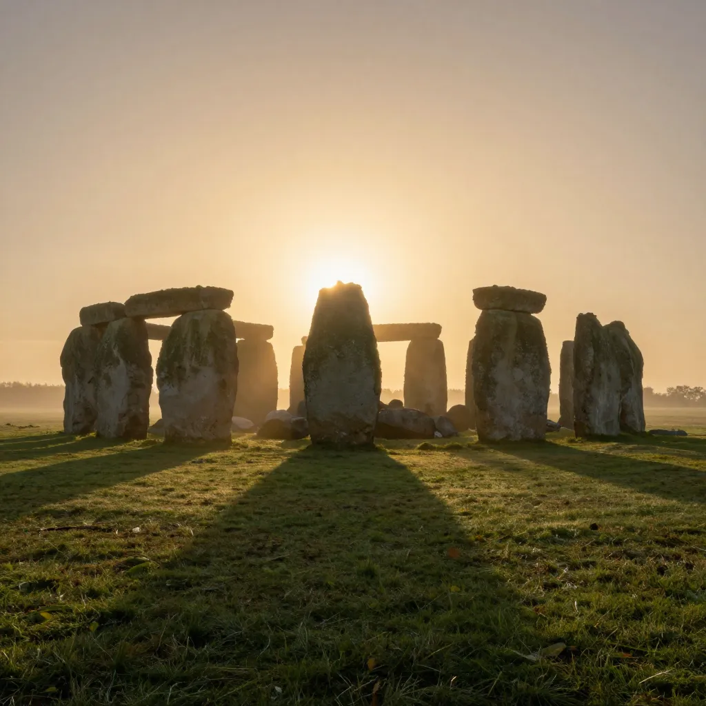

Stonehenge: The Ancient Monument That Still Defies Explanation

On the windswept expanse of Salisbury Plain in Wiltshire, England, where the sky stretches vast and the grassland rolls toward every horizon, there stands a circle of stones so ancient, so enigmatic, and so hauntingly beautiful that it has fascinated humanity for millennia. Stonehenge — a ring of massive sarsen trilithons and smaller bluestones arranged in precise astronomical alignments on a site that was already sacred before the first stone was raised — is perhaps the most famous prehistoric monument on Earth. It was built in stages over a period of approximately 1,500 years, beginning around 3100 BCE and continuing through multiple phases of construction, modification, and reuse until around 1600 BCE. The people who built it had no written language, no metal tools, no wheels, and no pulleys. And yet they quarried stones weighing up to 30 tons, transported some of them more than 140 miles across land and water, shaped them with remarkable precision using nothing but stone hammers, and raised them into formations that have survived five millennia of British weather. Why they did it — and how — remains one of the greatest mysteries of the ancient world.
The landscape around Stonehenge is itself a monumental artifact. The stones sit at the heart of what archaeologists call the Stonehenge Landscape — a vast ritual complex covering approximately 2,600 acres of Salisbury Plain that contains hundreds of archaeological features, including burial mounds, ceremonial avenues, earthwork enclosures, and the remains of ancient settlements. The Stonehenge Avenue, a processional pathway bordered by parallel ditches, connects the stone circle to the River Avon nearly two miles away. The Stonehenge Cursus, a massive rectangular earthwork measuring approximately 1.8 miles long, predates the stone circle and its purpose remains unknown. Durrington Walls, located about two miles northeast of Stonehenge, is one of the largest henge monuments in Europe — a circular earthwork nearly 1,500 feet in diameter — and is believed to have been the settlement where the builders of Stonehenge lived during construction. More than 350 burial mounds dot the surrounding ridges, containing the remains of elite individuals buried over a span of centuries. The entire landscape was inscribed as a UNESCO World Heritage Site in 1986.
The construction of Stonehenge occurred in multiple distinct phases. Stonehenge 1 (c. 3100 BCE) was the earliest phase and consisted of a circular earthwork enclosure — a ditch and bank approximately 360 feet in diameter — with an entrance on the northeast side. Inside this enclosure, a ring of 56 pits known as the Aubrey Holes was dug, possibly to hold timber posts or bluestones. Cremated human remains have been found in many of the Aubrey Holes, suggesting that the site served as a cemetery from its very beginning. The ditch was carved into the chalk bedrock using tools made from antler picks and animal bones — a staggering amount of manual labor that would have required the organized effort of a large community. Stonehenge 3 I (c. 2600 BCE) marked the most dramatic transformation: the arrival of the bluestones — approximately 80 stones weighing between 2 and 4 tons each, transported from the Preseli Hills in west Wales, a distance of approximately 140 miles. How Neolithic people transported 80 stones across this distance without wheels or draft animals remains one of the most debated questions in archaeology. Stonehenge 3 II (c. 2600–2400 BCE) brought the most iconic elements: the massive sarsen stones, hauled from the Marlborough Downs approximately 20 miles to the north. These enormous sandstone blocks, each weighing between 25 and 30 tons, were shaped into uprights and lintels and arranged in the famous trilithon formation — two upright stones capped by a horizontal lintel, connected with mortise-and-tenon joints adapted from woodworking. The tallest trilithon stood approximately 24 feet high. Subsequent phases involved rearrangements of the bluestones and additional modifications, continuing the site’s evolution over more than a millennium.
The logistics of construction are almost as mysterious as the monument’s purpose. The sarsen stones, weighing up to 30 tons each, were transported approximately 20 miles from the Marlborough Downs. Experimental archaeology has demonstrated that a single sarsen of this size could be moved on a wooden sledge pulled by teams of dozens or even hundreds of people, using rollers and lubricated tracks. The journey would have taken days or weeks per stone. The bluestones present an even greater logistical challenge. Transported approximately 140 miles from the Preseli Hills in west Wales, these stones may have been moved using a combination of overland sledges, river rafts, and coastal shipping. Some researchers have proposed that the bluestones were carried partly by glacial action during the last Ice Age, but the geological evidence strongly supports human transport — the bluestones at Stonehenge match specific outcrops in the Preseli Hills too precisely to be explained by random glacial deposition. The stones were shaped using quartz hammerstones; approximately 50,000 hammerstone fragments have been found at the site.
A 2024 discovery added a staggering new dimension to the transport mystery. The Altar Stone — a flat, recumbent green sandstone lying at the heart of the monument — was long assumed to have come from Wales, like the other bluestones. But a team of geologists using detrital zircon age dating and X-ray fluorescence analysis determined that the stone’s chemical signature matched rock formations in the Orcadian Basin of northeast Scotland, near the modern city of Inverness. This means the Altar Stone traveled approximately 465 miles (750 kilometers) from northern Scotland to Salisbury Plain — a journey that would have required crossing rugged highlands, navigating rivers, and possibly shipping the stone along the coast. The discovery implies that the Neolithic Britons who built Stonehenge maintained long-distance trade and transport networks spanning the entire length of the island of Great Britain.
In 2002, archaeologists made one of the most important discoveries ever made near Stonehenge: the grave of a man known as the Amesbury Archer, buried approximately 2,300 BCE in a richly furnished grave about three miles from the stone circle. The Archer was buried with an extraordinary collection of grave goods: gold ornaments (the oldest gold objects found in Britain), copper knives, flint tools, archery equipment, and Beaker pottery. Isotope analysis of his teeth revealed that he had grown up not in Britain but in the Alpine region of central Europe — modern-day Switzerland or southern Germany. His presence near Stonehenge suggests that the monument was part of a network of cultural connections spanning Bronze Age Europe. Another group of burials, the Boscombe Bowmen, discovered in 2003, showed a different pattern: isotope analysis indicated that these individuals had spent part of their lives in Wales, specifically in the region of the Preseli Hills where the bluestones originated. The tantalizing suggestion is that these people may have been directly involved in transporting the bluestones to Stonehenge.
Between 2010 and 2014, the Stonehenge Hidden Landscapes Project — a collaboration between the University of Birmingham and the Ludwig Boltzmann Institute — used ground-penetrating radar, magnetometry, and other remote sensing technologies to survey the landscape surrounding Stonehenge without digging a single trench. The results were astonishing. The project revealed an extensive network of previously unknown archaeological features — including ritual monuments, burial mounds, settlement enclosures, and processional routes — that had lain invisible beneath the grassland for millennia. Among the most dramatic discoveries was a row of up to 90 buried standing stones at Durrington Walls, dubbed “Superhenge” — a massive monument that would have dwarfed Stonehenge itself, subsequently found to have been deliberately dismantled and buried. The project demonstrated that Stonehenge was not an isolated monument but the centerpiece of a vast, densely occupied ritual landscape far more complex than previously imagined.
The question of Stonehenge’s purpose has been debated for centuries, and no single theory has achieved universal acceptance. The most prominent modern theory emerged from the Stonehenge Riverside Project (2003–2009), led by archaeologist Mike Parker Pearson of University College London. Pearson’s team proposed that Stonehenge was part of a paired ceremonial complex in which Durrington Walls (with its timber circles and evidence of feasting) represented the “domain of the living” — associated with wood, life, and celebration — while Stonehenge (with its stone circle and cremation burials) represented the “domain of the dead” — associated with stone, permanence, and ancestral memory. The Avenue connecting Stonehenge to the River Avon linked the two sites in a ritual procession along the river: the living moved from timber to stone, from the settlement of the living to the monument of the ancestors.
Other theories have focused on Stonehenge’s remarkable astronomical alignments. The monument’s axis is aligned with the summer solstice sunrise to the northeast and the winter solstice sunset to the southwest — alignments first systematically documented by the 18th-century antiquarian William Stukeley. In 1963, astronomer Gerald Hawkins published a controversial study proposing that Stonehenge functioned as a “Neolithic computer” capable of predicting eclipses. While Hawkins’ more ambitious claims have been largely dismissed by archaeologists, the basic solstitial alignment is universally accepted and remains one of the monument’s most compelling features. Each year, thousands of people gather at Stonehenge for the summer solstice sunrise — a tradition that may be as old as the monument itself, making Stonehenge quite possibly the site of the longest continuously observed ceremonial tradition in human history. Other researchers have proposed that Stonehenge was a healing center, arguing that the bluestones were believed to have medicinal properties, supported by the discovery of skeletal remains near Stonehenge showing evidence of illness and injury. The truth may be that Stonehenge served multiple purposes over its 1,500-year history — cemetery, astronomical observatory, ceremonial center, healing shrine, ancestral monument, and political statement — evolving and accumulating meanings as generation after generation returned to the stones.
Stonehenge has been studied, measured, excavated, photographed, scanned, and analyzed for more than 400 years, and it still resists definitive explanation. We know when it was built. We know where the stones came from — the sarsens from the Marlborough Downs, the bluestones from Wales, the Altar Stone from Scotland. We know how they were shaped — with quartz hammerstones, 50,000 fragments of which litter the site. We even have a good idea of who built it — Neolithic and Bronze Age communities connected across hundreds of miles of landscape. But we still do not know why. Was it a cemetery? A calendar? A temple? A political statement? A healing center? Perhaps it was all of these things, and more, across the 1,500 years of its use. Perhaps the reason Stonehenge continues to captivate us — five millennia after the first ditch was dug into the chalk of Salisbury Plain — is not that it has a single answer, but that it has many. It is a monument that means something different to every generation that stands before it. And perhaps that is the most remarkable thing of all: that the people who built it created not just a circle of stones, but a mirror in which every age sees its own reflection.
References & Further Reading
Wikipedia: Stonehenge Landscape — The broader ritual complex surrounding the stone circle
Wikipedia: Durrington Walls — The large henge settlement where Stonehenge’s builders likely lived
📚 Recommended Reading: Stonehenge (on Amazon) — As an Amazon Associate, we earn from qualifying purchases.
Editorial note: Stonehenge is documented through centuries of antiquarian research, modern archaeological excavation, and cutting-edge scientific analysis including radiocarbon dating, isotope analysis, and ground-penetrating radar. See our Editorial Policy.